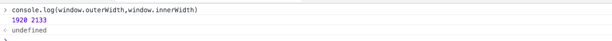
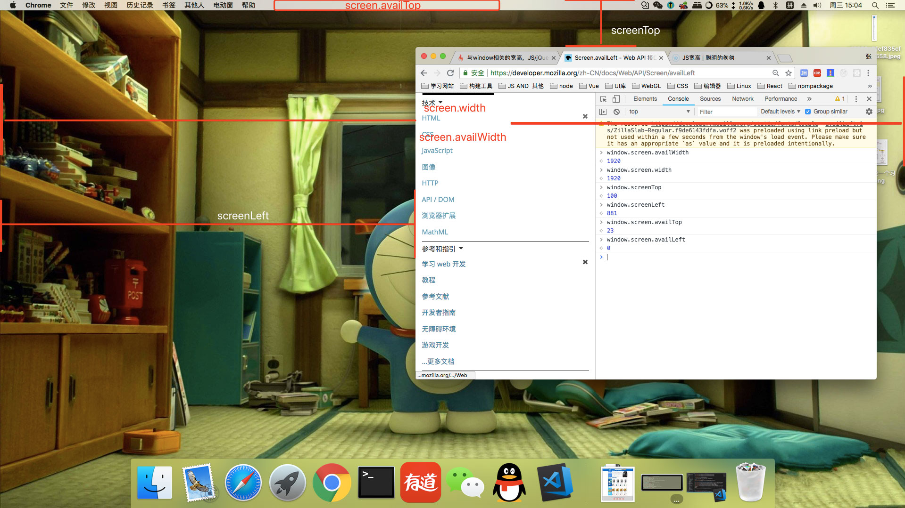
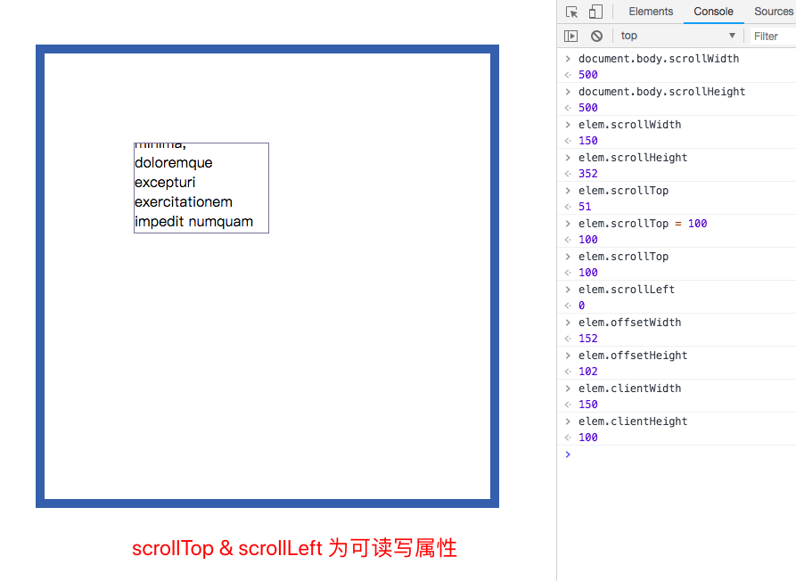
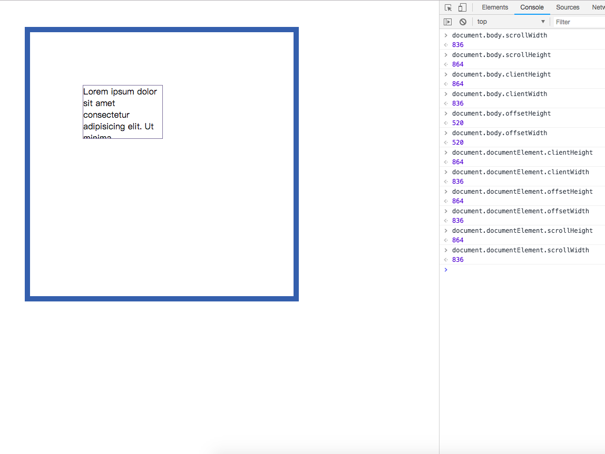
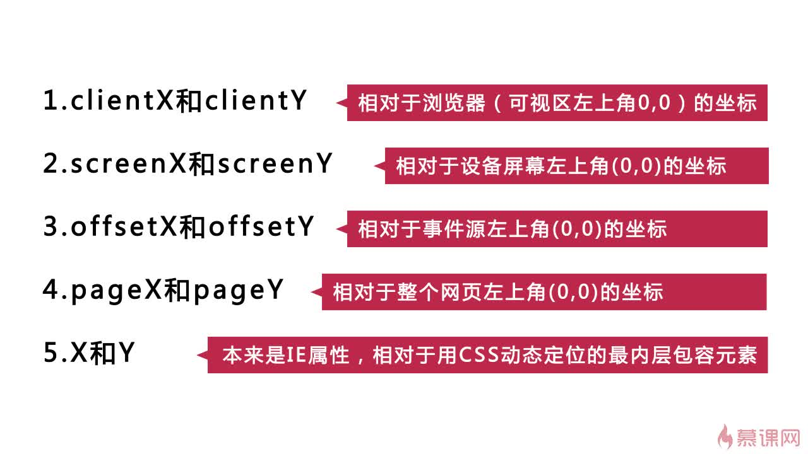
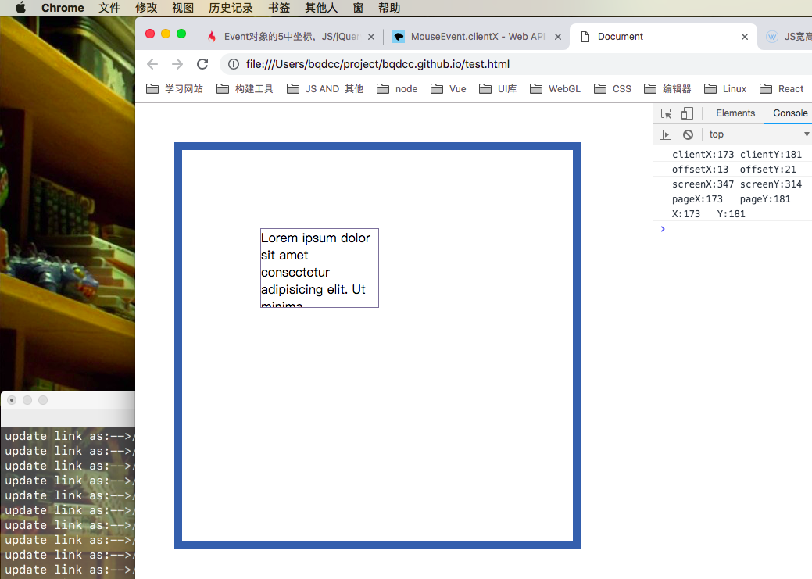
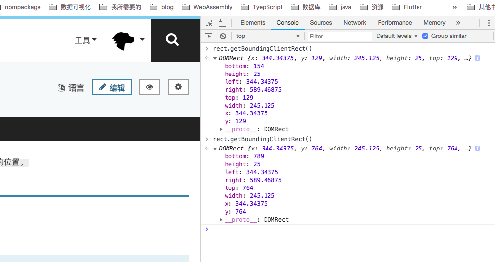

两个问题
1.window 和 document 的区别?
window 表示浏览器中打开(包含DOM文档)的窗口
window 是可以省略的,如 alert();window.alert()
document 表示任何在浏览器中已经加载好的网页，并作为一个入口去操作网页内容（也就是DOM tree）
document 对象是 window 对象的一部分,如 document.body;window.document.body
2.window.location 和 document.location 一样吗?
window.location 只读属性，返回一个 Location 对象,表示该窗口当前显示文档的URL相关信息
document.location 只读属性，返回一个 Location 对象,表示该文档的URL相关信息window.location === document.location;//true 即使在 iframe 中也是一样的
尽管 window.location 是一个只读 Location 对象，你仍然可以赋给它一个 DOMString。
这意味着您可以在大多数情况下处理 location，就像它是一个字符串一样：window.location = 'http://www.example.com'，
是 window.location.href = 'http://www.example.com'的同义词
window 相关宽高
内部和外部 宽高
window.innerWidth: 浏览器视口（viewport）宽度（单位：像素）
window.innerHeight: 浏览器窗口的视口（viewport）高度（单位：像素）
window.outerWidth: 整个浏览器窗口的宽度，包括侧边栏（如果存在）、窗口镶边（window chrome）和调正窗口大小的边框（window resizing borders/handles）
window.outerHeight: 整个浏览器窗口的高度（单位：像素），包括侧边栏（如果存在）、窗口镶边（window chrome）和窗口调正边框（window resizing borders/handles）。


window.innerWidth:浏览器视口（viewport）宽度（单位：像素），如果存在垂直滚动条则包括它。
大部分情况下 innerWidth&outerWidth是相等的innerWidth&innerHeight 表示的是浏览器视口(viewport)宽高, 故受缩放影响(浏览器缩放,windowsDPI设置)

Screen 相关信息
window.screen.availHeight: 浏览器窗口在屏幕上可占用的垂直空间
window.screen.availWidth: 浏览器窗口在屏幕上可占用的水平空间
window.screen.width: 屏幕的宽度
window.screen.height: 屏幕的高度
window.screenTop: 浏览器窗口相对于屏幕顶部的距离
window.screenLeft: 浏览器窗口相对于屏幕左边的距离
window.screen.availTop: 浏览器窗口在屏幕上的可占用空间上边距离屏幕上边界的像素值
window.screen.availLeft: 浏览器可用空间左边距离屏幕（系统桌面）左边界的距离


document 相关宽高
client
Element.clientHeight: 元素的可视部分高度,padding+content,但不包括水平滚动条、边框和外边距
Element.clientWidth: 元素的可视部分宽度,padding+content,但不包括垂直滚动条、边框和外边距
Element.clientLeft: 元素的左边框的宽度,border-left的border-width
Element.clientTop: 元素的上边框的高度度,border-top的border-width

1 | var w= document.documentElement.clientWidth || document.body.clientWidth; |
offset
HTMLElement.offsetParent: 返回一个指向最近的（closest，指包含层级上的最近）包含该元素的定位元素。如果没有定位的元素，则 offsetParent 为最近的 table, table cell 或根元素（标准模式下为 html；quirks 模式下为 body）。当元素的 style.display 设置为 “none” 时，offsetParent 返回 null。
HTMLElement.offsetHeight: 该元素的像素高度，高度包含该元素的垂直内边距和边框，且是一个整数。
HTMLElement.offsetWidth: 元素的布局宽度。
HTMLElement.offsetLeft: 当前元素左上角相对于 HTMLElement.offsetParent 节点的左边界偏移的像素值。
HTMLElement.offsetTop: 当前元素相对于其 offsetParent 元素的顶部的距离。


scroll
Element.scrollHeight: ,当内容小于 clientHeight 时 scrollHeight == clientHeight, 当内容大于 clientHeight 时, scrollHeight 表示元素内容的实际高度
Element.scrollWidth: 当内容小于 clientHeight 时 scrollWidth == clientWidth, 当内容大于 clientWidth 时, scrollWidth 表示元素内容的实际宽度
Element.scrollTop: 元素被卷起的高度
Element.scrollLeft: 元素被卷起的宽度
1 | body{ |
其中 当1

可是1

Event
1 | document.onclick = function(event){ |


应用场景
懒加载
何时:
元素距离文档顶部距离 小于 文档可视区域
文档可视区域(window.innerHeight || document.documentElement.clientHeight || document.body.clientHeight)
元素距离文档顶部距离
Element.getBoundingClientRect()


1 | /* 图片加载 */ |
是否滚动到顶部
何时:
Element.scrollTop == 0
是否滚动到底部
何时:
元素可视区域 + Element.scrollTop >= Element.scrollHeight
滚动轴宽度计算
何时:
定义一个元素 `overflow-y:scroll`
1.Element.offsetWidth - clientWidth
2.元素无滚动轴状态下 clientWidth - 有滚动轴状态下 clientWidth
Element.remove()
1 | /* |
Tip:mac 系统下滚动轴宽度为 0